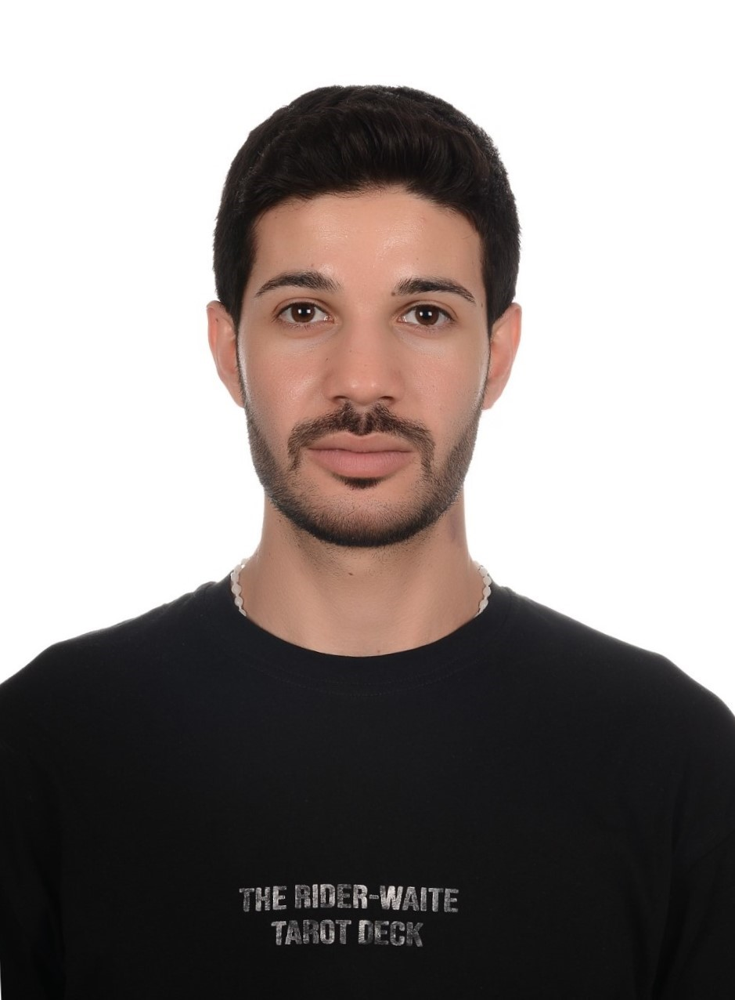

Kenan Alzakout

Computer Engineering Intern
Passionate computer engineering student with a drive to innovate and solve
complex problems through technology and Eager to learn from industry
professionals, and make a meaningful impact in the field of computer
engineering.
EDUCATION
(BSc) in Computer Engineering
European University of Lefke
02/2019 - Present
Courses:
- INTERNET PROGRAMMING
- DATA STRUCTURES
- SYSTEMS PROGRAMMING
- OBJECT-ORIENTED PROGRAMMING
- PRINCIPLES OFPROGRAMMINGLANGUAGES
- DATABASE MANAGEMENT SYSTEMS
- ANALYSIS OF ALGORITHMS
PERSONAL PROJECTS
Database managment system. (10/2022 - 11/2022)
Web application (05/2022 - 06/2022)
Digital Image Processing Principles (05/2023 - 06/2023)
Graduation project. (04/2023 - Present)
SKILLS
HTML _ CSS _ JavaScript _ C++ _ C _ SQLite _ Problem-Solving _ Teamwork
_ communication skills _ Time Management _ Emotional Intelligence
WORK EXPERIENCE & ORGANIZATIONS
Assistant at the university's Social and Culture Activities Center.
(10/2022 - Present)
Syrian Arab Red Crescent (01/2017 - Present) Coordinator
LANGUAGES
English
Full Professional Proficiency
Arabic
Native or Bilingual Proficiency
Turkish
Limited Working Proficienc
INTERESTS
Technologies _ programming _ languages _ Problem-Solving and
Troubleshooting _ Web Development _ AI